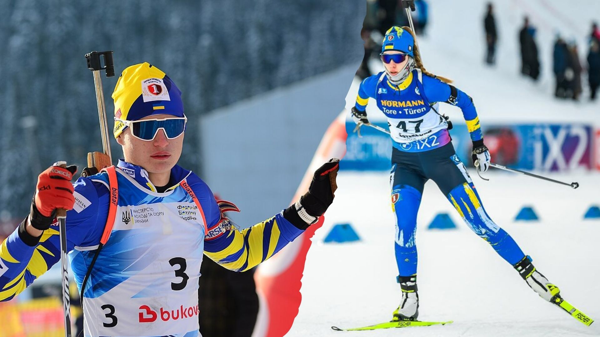
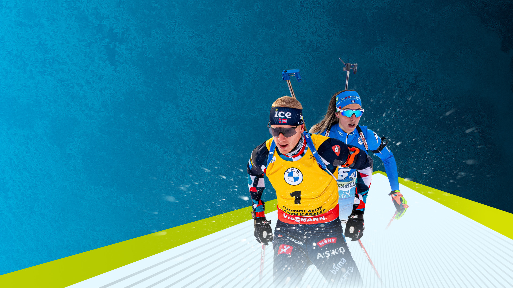
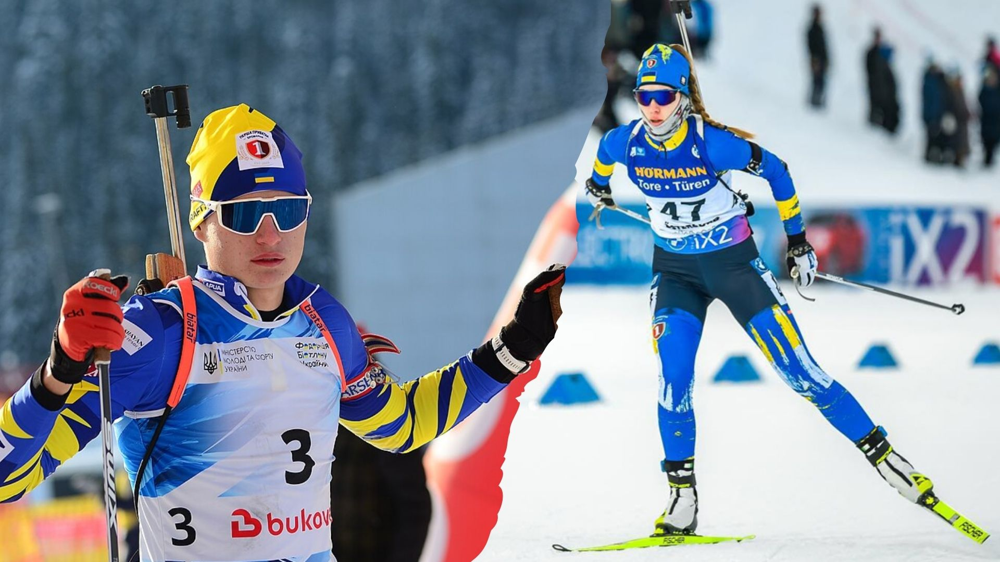
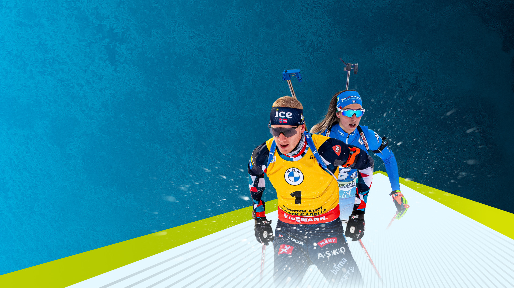
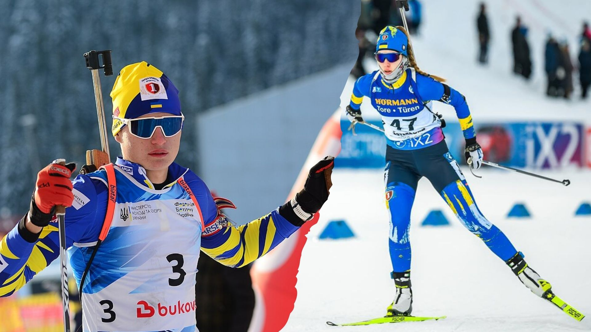
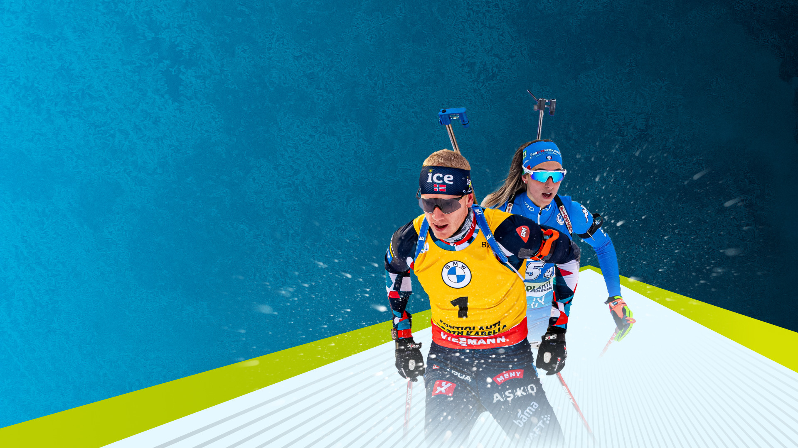

⬆


Біатло́н (від лат. bi — двічі та грец. ἆθλον — боротьба) — зимовий вид спорту, двоборство, що поєднує лижні перегони і стрільбу лежачи та стоячи на кількох вогневих рубежах з дрібнокаліберної гвинтівки. Активний розвиток біатлону припадає на 20-ті роки ХХ століття, коли починають відбуватися змагання з лижних перегонів серед військових патрулів зі стрільбою, киданням гранати тощо.
Біатлон виник у Скандинавії, як змагання в лижних перегонах зі стрільбою. Перші змагання з подібних перегонів були проведені в Норвегії в 1767 році. У двох номерах програми з трьох лижники під час проходження певного схилу мають влучити у певну ціль, котра знаходилась на відстані приблизно 40–50 кроків від них. Однак, попри ранню появу цей вид спорту культивувався переважно в скандинавському регіоні, не поширюючись в інші країни Європи.
Період активного розвитку біатлону припадає на 1920–30-ті роки XX століття. Перегони на лижах зі стрільбою починають проводитися в Норвегії, поступово трансформуючись в «перегони військових патрулів». Перегони військових патрулів увійшли до програми перших Зимових Олімпійських ігор в Шамоні, що відбулися у 1924 році. У такому вигляді цей спорт «дожив» до 1948 року. Проте у зв'язку з антивоєнними настроями в суспільстві, коли людство вирішило все-таки «дати миру шанс», такі змагання були визнані дуже мілітаристськими. Біатлон був скасований.
Лише у 1958 році мода на біатлон повернулася. З цього року проводяться чемпіонати світу з біатлону та чемпіонати Європи. Біатлон є олімпійським видом спорту. Вже у 1960 році біатлон, практично в сучасному вигляді, був включений до програми Олімпійських ігор. Тоді ж у Скво-Веллі (США) був розіграний перший комплект олімпійських медалей у чоловіків. А ось жінки вперше виступили на Олімпійських іграх тільки у 1992 році в Альбервілі (Франція). Першою олімпійською чемпіонкою з біатлону стала росіянка Анфіса Резцова.
Перші олімпійські медалі в спринті були розіграні лише через 20 років, 1980 року в Лейк-Плесіді (США). Першим олімпійським чемпіоном став Франк Улльріх (Німеччина). А гонка переслідування з'явилася в програмі Олімпійських ігор тільки на Олімпіаді 2002 року в Солт-Лейк-Сіті (США) (доти розігрувалися медалі тільки на чемпіонатах світу з біатлону). Першою олімпійською чемпіонкою з біатлону в гонці переслідування стала Ольга Пильова. Серед чоловіків Уле-Ейнар Б'єрндален. Масстарт включили до програми Олімпійських Ігор лише 2006 року в Турині. Першою олімпійською чемпіонкою в масстарті стала Анна-Карін Улофсон (Швеція). Серед чоловіків — Міхаель Грайс (Німеччина).